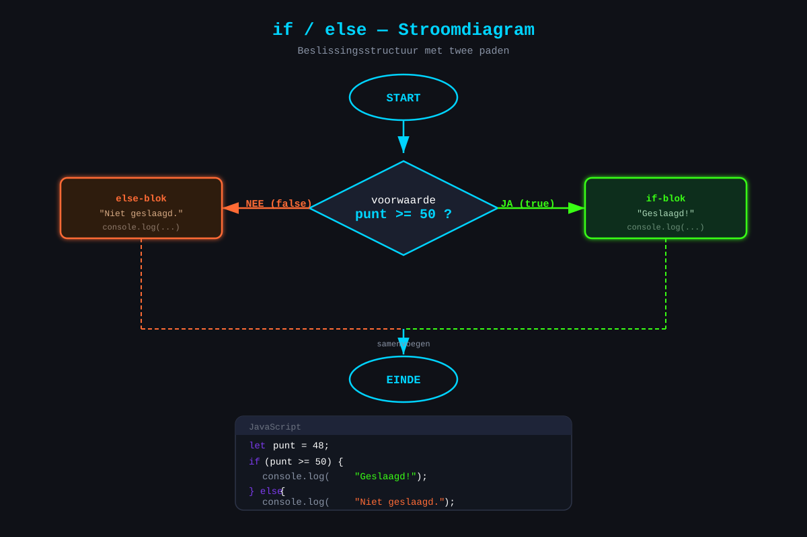
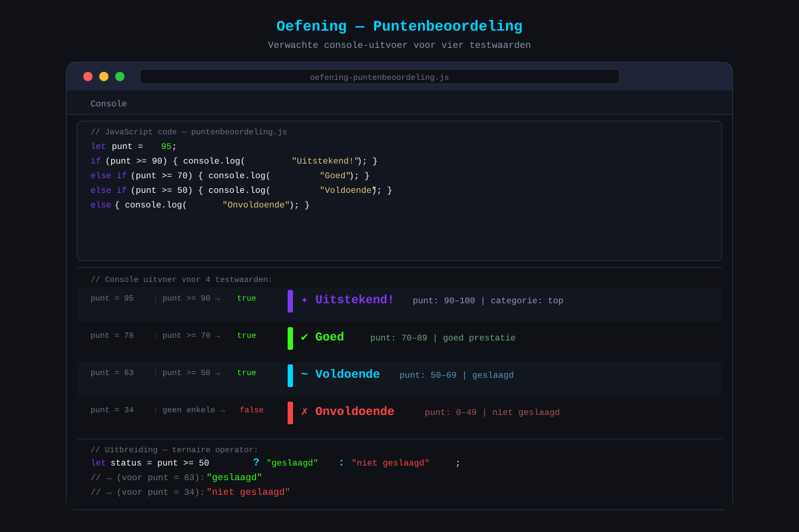

Voorwaarden
- Een
if-statement schrijven en uitleggen wat het doet - Een
if / else-constructie toepassen bij twee mogelijke gevallen - Meerdere gevallen afhandelen met
if / else if / else - Een
switch-statement lezen en schrijven voor vaste waarden - De ternaire operator
? :gebruiken voor eenvoudige keuzes - Geneste
if-statements herkennen en weten wanneer je ze beter vermijdt
22.1 Het if-statement
Een programma dat altijd hetzelfde doet, is weinig nuttig. Pas wanneer je code kan reageren op de situatie — op wat de gebruiker invult, op wat er in een variabele staat — wordt het interessant. Voorwaarden laten je programma kiezen: doe dit als iets geldt, doe dat anders.
Structuur
if (voorwaarde) {
// code die uitgevoerd wordt ALS de voorwaarde waar (true) is
}Eerste voorbeeld: leeftijdscontrole
let leeftijd = 17;
if (leeftijd >= 18) {
console.log("Je mag naar binnen.");
}Stap voor stap: JavaScript evalueert leeftijd >= 18 → dat is 17 >= 18 → dat is false. De console.log wordt niet uitgevoerd.
Vergelijkingsoperatoren
| Operator | Betekenis | Voorbeeld | Resultaat |
|---|---|---|---|
=== | Gelijk aan (waarde én type) | 5 === 5 | true |
!== | Niet gelijk aan | 5 !== 3 | true |
> | Groter dan | 10 > 5 | true |
< | Kleiner dan | 3 < 7 | true |
>= | Groter dan of gelijk aan | 5 >= 5 | true |
<= | Kleiner dan of gelijk aan | 4 <= 3 | false |
Gebruik altijd === (strikte vergelijking). De == operator doet automatische typeomzetting en kan verrassende resultaten geven: "5" == 5 is true, maar "5" === 5 is false.
22.2 if / else — twee gevallen
Soms wil je iets doen als de voorwaarde geldt, en iets anders als dat niet het geval is. Dat doe je met else.
if (voorwaarde) {
// uitgevoerd als voorwaarde TRUE is
} else {
// uitgevoerd als voorwaarde FALSE is
}Voorbeeld: geslaagd of niet
let punt = 48;
if (punt >= 50) {
console.log("Geslaagd! Proficiat.");
} else {
console.log("Niet geslaagd. Veel succes bij de herexamens.");
}
22.3 if / else if / else — meerdere gevallen
Wat als je meer dan twee gevallen hebt? Dan gebruik je else if.
if (voorwaarde1) {
// uitgevoerd als voorwaarde1 TRUE is
} else if (voorwaarde2) {
// uitgevoerd als voorwaarde1 FALSE is EN voorwaarde2 TRUE is
} else if (voorwaarde3) {
// uitgevoerd als voorwaarde1 en voorwaarde2 FALSE zijn EN voorwaarde3 TRUE is
} else {
// uitgevoerd als GEEN enkele voorwaarde hierboven TRUE is
}JavaScript controleert de voorwaarden van boven naar onder. Zodra er één true is, wordt die blok uitgevoerd en stopt de controle. Begin altijd met de meest restrictieve voorwaarde (de hoogste grens).
Voorbeeld: puntenbeoordeling
let punt = 72;
if (punt >= 90) {
console.log("Uitstekend!");
} else if (punt >= 70) {
console.log("Goed");
} else if (punt >= 50) {
console.log("Voldoende");
} else {
console.log("Onvoldoende");
}
// → "Goed" (punt 72 haalt de grens van 70, maar niet van 90)Verkeerde volgorde leidt tot fouten
// FOUT — de volgorde klopt niet
let punt = 85;
if (punt >= 50) {
console.log("Voldoende"); // dit wordt altijd als eerste geraakt voor alles boven 50!
} else if (punt >= 70) {
console.log("Goed"); // wordt nooit bereikt voor 70-89
} else if (punt >= 90) {
console.log("Uitstekend"); // wordt nooit bereikt
}22.4 switch — vaste gevallen
Als je een variabele vergelijkt met een reeks vaste, bekende waarden, is switch soms overzichtelijker dan een lange reeks else if-blokken.
switch (uitdrukking) {
case waarde1:
// code
break;
case waarde2:
// code
break;
default:
// code als geen enkel geval overeenkomt
}break stopt de uitvoering. Zonder break "valt" de code door naar het volgende geval — dit is zelden wat je wil.
Voorbeeld: dag van de week
let dag = "maandag";
switch (dag) {
case "maandag":
console.log("Begin van de werkweek.");
break;
case "vrijdag":
console.log("Bijna weekend!");
break;
case "zaterdag":
case "zondag":
console.log("Weekend! Genieten.");
break;
default:
console.log("Gewone werkdag.");
}Wanneer switch, wanneer if/else?
| Gebruik if / else if | Gebruik switch |
|---|---|
| Bereikcontroles (>, <, >=) | Vergelijking met exacte, vaste waarden |
| Complexe logische uitdrukkingen | Veel gevallen op één variabele |
| Booleaanse controles | Leesbare vervanging van lange if/else-ketens |
22.5 Ternaire operator ? :
De ternaire operator is een compacte manier om een eenvoudige if / else in één regel te schrijven.
let resultaat = voorwaarde ? waardeAlsTrue : waardeAlsFalse;Vergelijking met if/else
// Met if/else:
let boodschap;
if (leeftijd >= 18) {
boodschap = "Welkom!";
} else {
boodschap = "Toegang geweigerd.";
}
// Met ternaire operator (zelfde resultaat):
let boodschap = leeftijd >= 18 ? "Welkom!" : "Toegang geweigerd.";Gebruik in een string
let score = 65;
let resultaat = score >= 50 ? "geslaagd" : "niet geslaagd";
console.log(`De leerling is ${resultaat}.`);
// → "De leerling is geslaagd."De ternaire operator is korter, maar gebruik hem alleen voor eenvoudige gevallen. Complexe logica schrijf je beter uit met if/else.
22.6 Geneste if-statements
Je kan een if binnenin een andere if plaatsen. Dit noem je nesting (nestelen).
let leeftijd = 20;
let heeftRijbewijs = true;
if (leeftijd >= 18) {
if (heeftRijbewijs) {
console.log("Je mag een auto huren.");
} else {
console.log("Je bent oud genoeg, maar je hebt geen rijbewijs.");
}
} else {
console.log("Je bent te jong om een auto te huren.");
}Ga nooit dieper dan twee niveaus van nesting. Als je merkt dat je een derde niveau nodig hebt, herdenk je structuur. Combineer de voorwaarden liever met logische operatoren (zie H23).
Herschreven zonder nesting
// Makkelijker te lezen:
if (leeftijd >= 18 && heeftRijbewijs) {
console.log("Je mag een auto huren.");
} else if (leeftijd >= 18) {
console.log("Je bent oud genoeg, maar je hebt geen rijbewijs.");
} else {
console.log("Je bent te jong om een auto te huren.");
}Oefeningen
Schrijf een JavaScript-programma dat een cijfer (van 0 tot 100) omzet naar een beoordeling.
Beoordelingstabel:
| Cijfer | Beoordeling |
|---|---|
| 90 — 100 | Uitstekend |
| 70 — 89 | Goed |
| 50 — 69 | Voldoende |
| 0 — 49 | Onvoldoende |
- Maak een variabele
cijferen geef die een waarde tussen 0 en 100 - Schrijf de
if / else if / elsestructuur met de vier gevallen - Toon de beoordeling met
console.log - Test je programma met minstens vier verschillende cijfers: één per categorie
Uitbreiding (optioneel):
- Voeg een controle toe: als het cijfer kleiner is dan 0 of groter dan 100, toon dan "Ongeldig cijfer"
- Gebruik de ternaire operator om apart te bepalen of de leerling "geslaagd" of "niet geslaagd" is (grens: 50)

Huistaak
Opdracht: Dag-nacht boodschap
Schrijf een JavaScript-programma dat op basis van het uur van de dag een gepaste boodschap toont.
Deel 1 — if / else if / else (4 punten)
- Maak een variabele
uurmet een waarde tussen 0 en 23 - Gebruik
if / else if / elseom te bepalen welke periode het is:- 0 – 5: "Nacht — slaap lekker!"
- 6 – 11: "Ochtend — goedemorgen!"
- 12 – 17: "Namiddag — goedemiddag!"
- 18 – 23: "Avond — goedenavond!"
- Toon de boodschap in de console
Deel 2 — switch (3 punten)
- Maak een variabele
seizoenmet één van de waarden:"lente","zomer","herfst","winter" - Gebruik een
switch-statement om een passende boodschap te tonen per seizoen - Voeg een
defaulttoe voor ongeldige waarden
Deel 3 — Ternaire operator (3 punten)
- Maak een variabele
temperatuur(getal) - Gebruik de ternaire operator om te bepalen of het "warm" (>= 20°C) of "koud" is
- Combineer dit in een template literal:
"Het is 22 graden en dat is warm."
Vragenlijst
Controleer of je de leerstof van dit hoofdstuk begrijpt.
Wat is het resultaat van de volgende code als punt = 45?if (punt >= 50) { console.log("Geslaagd"); } else { console.log("Niet geslaagd"); }
Waarom gebruik je best altijd === in plaats van ==?
Wat toont de volgende code als punt = 85?if (punt >= 90) { console.log("Uitstekend"); } else if (punt >= 70) { console.log("Goed"); } else { console.log("Voldoende"); }
Wat doet break in een switch-statement?
Wat is de uitvoer van: let x = 8; let r = x > 5 ? "groot" : "klein"; console.log(r);
Wanneer is het beter om een switch te gebruiken in plaats van if / else if?